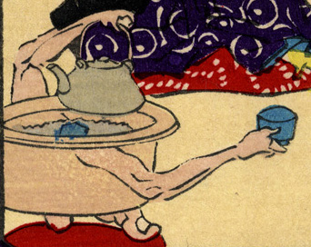

猫足の火鉢の化物。腕が生えていて、茶瓶と茶碗を持っている。また猫足が人の足の指のようになっている。
出典：親書誌：U426_nichibunken_0226：化物の嫁入；バケモノノヨメイリ／日付：2010／資源識別子：U426_nichibunken_0226_0008_0000
Copyright (c)2010- International Research Center for Japanese Studies, Kyoto, Japan. All rights reserved.